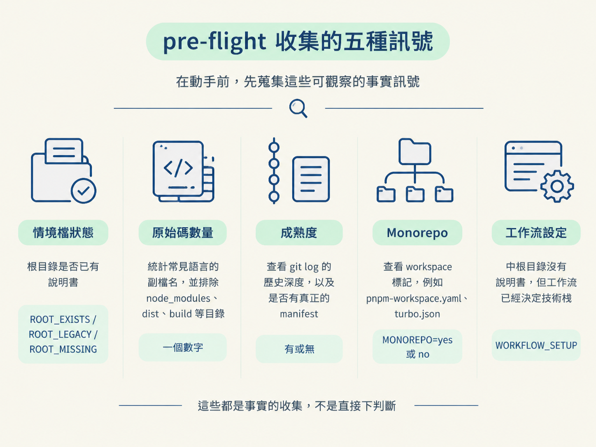

/audit 要走哪條路完成這一節後，你應該能從 repo 的實際狀態判斷它適合哪個 phase，也能說明為什麼「工作流已經設定完成」這個訊號，會比原始碼數量更有決定力。
上一節我們確認，/audit 的產出是 AGENTS.md。但如果你只在空白專案上跑過一次，很容易以為它的流程很簡單：問幾個問題、寫一份檔案，然後結束。
實際上，/audit 面對不同 repo，可能會採取完全不同的做法。
剛 scaffold 出來的專案，會透過面板詢問一整套技術慣例；有三年歷史、卻沒有任何說明文件的 repo，可能直接開始掃描；如果你只指定「幫我看一下 src/auth」，它就只處理那個區域；而已經有根目錄說明書的專案，則會進入比較保守的補缺模式。
四種情境，對應四套流程。/audit 不會一進場就急著掃檔案，而是先做一輪稱為 pre-flight 的前置檢查，收集幾個可觀察的訊號，再依照路由表決定要走哪個 phase。這一節就來拆開這套判斷邏輯。
最直覺的分類方式，是把檔案少的 repo 當成新專案，把檔案多的 repo 當成既有專案。看起來合理，卻很容易被 scaffold 出來的骨架騙過。
想像一個剛用框架初始化的專案。它可能已經有 package.json、一堆設定檔，以及幾十個範例原始碼。若只看檔案數，/audit 會把它當成「有碼的既有專案」，跳過技術慣例的提問，直接開始掃描。
但這些檔案只是剛生成的骨架，專案還沒有真正的功能，團隊也還沒定下自己的工程慣例。此時跳過提問，等於錯過最重要的一次設定機會。
反過來，檔案數也可能低估成熟度。不熟悉的語言或冷門副檔名，可能讓計數結果變成零，進而把成熟專案誤判成空白專案。因此，這套流程不依賴單一數字，而是讓不同性質的訊號互相校正。
真正開始動手前，pre-flight 會收集以下資訊：
| 訊號 | 看什麼 | 可能的值 |
|---|---|---|
| 情境檔狀態 | 根目錄是否已有說明書 | ROOT_EXISTS / ROOT_LEGACY / ROOT_MISSING |
| 原始碼數量 | 統計常見語言的副檔名，並排除 node_modules、dist、build 等目錄 | 一個數字 |
| 成熟度 | 查看 git log 的歷史深度，以及是否有真正的 manifest，例如 package.json、go.mod | 有或無 |
| Monorepo | 查看 workspace 標記，例如 pnpm-workspace.yaml、turbo.json | MONOREPO=yes 或 no |
| 工作流設定中 | 根目錄沒有說明書，但工作流已經決定技術棧 | WORKFLOW_SETUP |

「情境檔狀態」有三種可能：
ROOT_EXISTS：根目錄已經有 AGENTS.md。ROOT_LEGACY：根目錄只有一份有內容的舊版 CLAUDE.md。ROOT_MISSING：兩者都沒有。其中最需要留意的是 WORKFLOW_SETUP。它表示根目錄雖然還沒有說明書，但工作流的後續階段已經決定了技術棧。常見證據包括：docs/specs/ 裡有一份包含 ## Proposed stack 的架構規格，或 docs/scope/ 裡有一個專門決定技術棧的功能項目。
訊號收齊後，/audit 會依照下面的順序，由上往下逐一檢查。這不是同時比對所有條件；前面符合的條件，會先決定路線。
| 條件 | Phase |
|---|---|
命令後面指定了區域路徑，例如 /audit src/auth | Phase 3（area 掃描） |
根目錄已有 AGENTS.md，或完成遷移後已有該檔案 | Phase 4（gap-fill） |
沒有說明書，但 WORKFLOW_SETUP 成立 | Phase 1（greenfield） |
| 沒有說明書、沒有工作流設定，也沒有原始碼與 manifest | Phase 1（greenfield） |
| 沒有說明書、沒有工作流設定，但有真正的功能碼與至少兩次提交 | Phase 2（whole-repo 掃描） |
| 有程式碼，但看起來只是尚未動過的骨架；或只有一次提交；或無法分辨新舊 | Phase 0（停下來詢問） |
這張表的核心原則是：情境越確定，路線就越具體；情境越模糊，就越往中間退。
最後一列就是保險絲。當 /audit 無法從現有訊號判斷專案究竟是新的還是既有的，它不會硬猜，而是停下來問你一次。
最值得注意的情況是：WORKFLOW_SETUP 明明表示 repo 已經有原始碼和 manifest，卻仍然會走 greenfield。這正是「不能只看檔案數量」的具體解法。
完整工作流的順序是：/scope 先釐清需求，/architect 再決定技術棧，接著依照技術棧 scaffold 專案，最後才由 /audit 把工程慣例記錄下來。
因此，當 /audit 登場時，專案確實可能已經有很多檔案。但那些檔案是剛生成的骨架，不是長期累積出的成品。它真正的狀態仍然是「新專案，尚未定下慣例」，只是外觀看起來比較像老專案。
WORKFLOW_SETUP 就是用來辨認這個差異的訊號。當 /audit 發現說明書還不存在，但規格中已經寫了 Proposed stack，它就能判斷這是剛 scaffold 完的合作專案，應該走 greenfield，把技術標準問清楚。
相對地，真正的 brownfield（Phase 2）有更嚴格的定義：必須有真正的功能碼、真正的開發歷史，而且沒有正在進行中的工作流設定。
如果 repo 介於兩者之間，怎麼看都不像新專案或既有專案，就會落到 Phase 0。這時候流程不猜答案，而是直接問你一次，並提供一個標示為「建議」的選項。
建議值會依當下較強的訊號決定：
你選定之後，流程就會接上對應的 phase。這裡的重點不是讓 agent 永遠自己做決定，而是在不確定時，把判斷權交回給你。
CLAUDE.md 的遷移路由表之外，還有一個需要特別處理的情境：ROOT_LEGACY。
當根目錄只有一份有內容的舊版 CLAUDE.md，卻沒有 AGENTS.md，表示這個專案的知識目前都鎖在只被單一工具讀取的檔案裡。此時，/audit 不會直接改檔案，而是先詢問你的許可：
我找到一份有內容的
CLAUDE.md，但沒有AGENTS.md。我打算把內容搬進新的AGENTS.md，並把CLAUDE.md換成指標，可以嗎？
如果你同意，它會把內容原封不動搬到新的 AGENTS.md，再把舊檔替換成指標。完成後，流程會視同已經有 AGENTS.md，接著以 Phase 4 繼續執行。

如果你不同意，兩個檔案都會保持原樣，/audit 會跳過遷移。
這裡再次體現同一條原則：既有內容可能是人寫的；任何會改動它的動作，都必須先取得同意。
/audit會先透過 pre-flight 收集五類訊號，再依照路由表選擇 phase。它不依賴單一檔案數量，因為 scaffold 可能讓新專案看起來像老專案。其中的關鍵是
WORKFLOW_SETUP：只要工作流已經決定技術棧，即使 repo 裡已經有一堆檔案，仍然要走 greenfield。真的分不清時，流程會退回 Phase 0 問你一句，而不是硬猜。遇到舊版CLAUDE.md，也會遵守「先問再動」的原則。
到這裡，你已經知道 /audit 如何選路線。接下來三節會逐一走進各個 phase 的實際操作。
下一站是最需要你參與的 greenfield。它是唯一一次把所有技術慣例集中問清楚的機會，也是四種 coding-style preset 登場的地方。